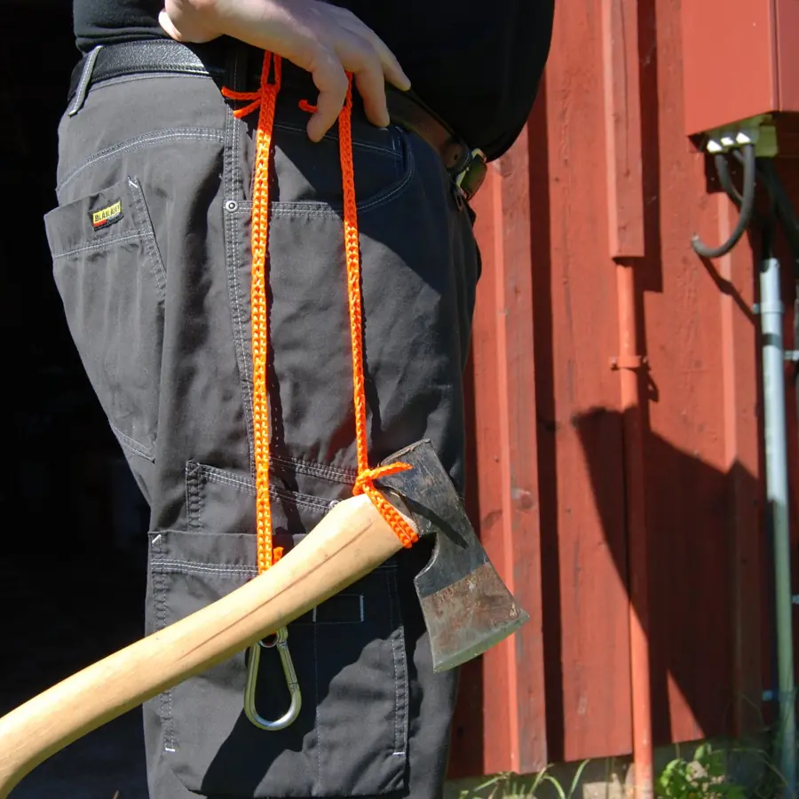
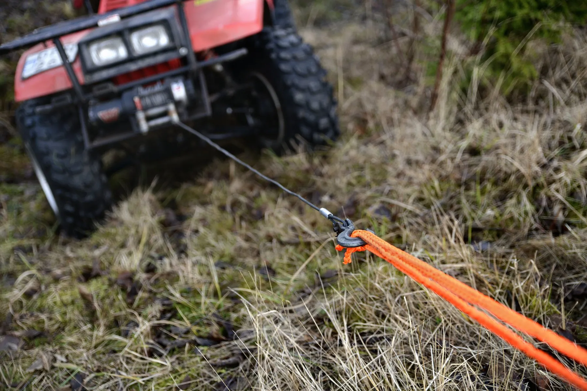
RunLock is a braided polyester rope with a loop every few centimetres. Pull it through itself and you have a grip, a snare or a lock in a second, without a knot. Pull back and it releases, even after a heavy load, even wet or frozen.
Two strands of braided polyester run parallel and are braided together at intervals, so the rope is a row of loops from end to end. Every loop is a place to lock, adjust or join.
No jamming, nothing that comes untied or works loose. Quick locks that anyone can learn in minutes.
The rope keeps its full breaking strength in the first loop and in every situation after it.
21 to 25 % stretch, depending on size, takes the snatch out of towing and lets you tie gear down with force.
Two RunLocks connect loop to loop. Extend, shorten or double up for more pulling force.
Does not swell in water. Strong resistance to salt water, UV light and petroleum products.
Will not scratch your gear or leave marks. Easy to carry in a pocket, comfortable in the hand, washable at 40 °C.
Every lock is made the same way: the rope goes through one of its own loops. The animations play one step at a time and pause on each step. Drag the slider to go back and forth, and press Slow if it goes too fast.
The everyday lock. The rope runs through one of its own loops, so the noose tightens under load and opens again when you slack it off.
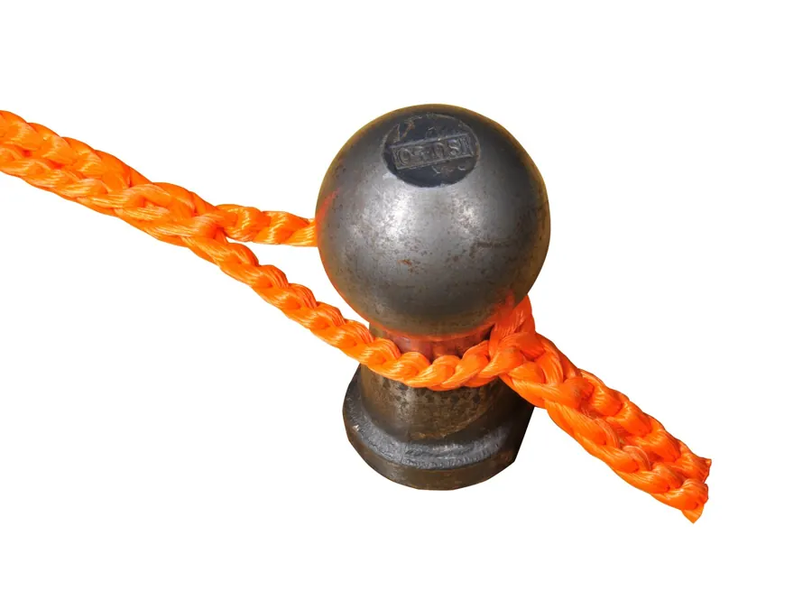
Running loop on a tow ballStep-by-step pictures and where to use it →A loop that keeps its size whatever the load. For a carabiner, a ring, or a hand grip that must not choke.
 Fixed loop on a carabinerStep-by-step pictures and where to use it →
Fixed loop on a carabinerStep-by-step pictures and where to use it →The lock for closed rings, hooks and chains under heavy load. It will not untie however hard you pull, and one pull on the free end releases it.
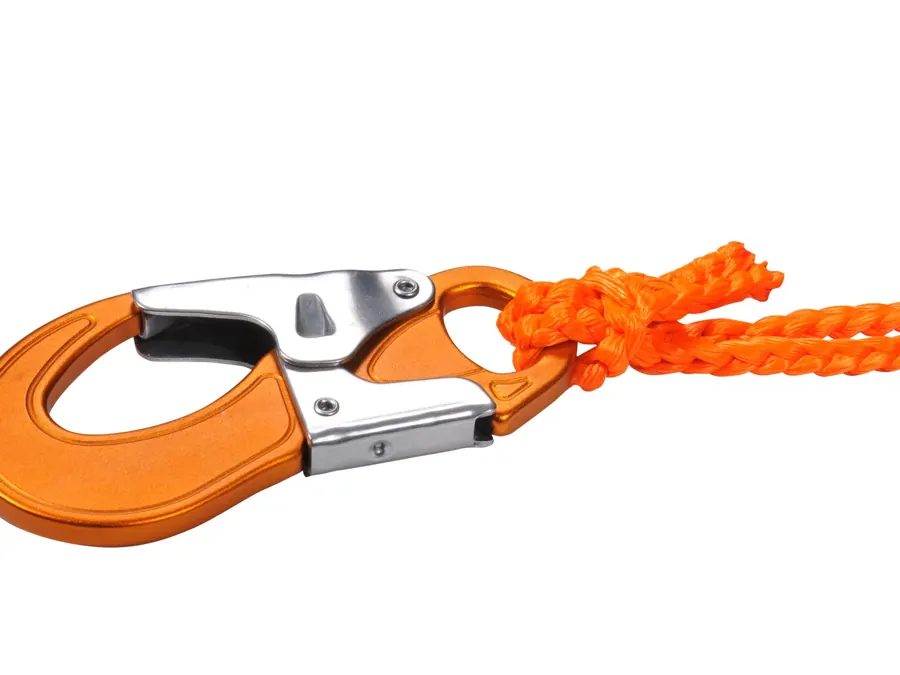
Quick loop on a hookStep-by-step pictures and where to use it →For tying down cargo and anything that must not creep. The rope goes over the load, around the anchor and locks on itself, with the built-in stretch keeping it tight.
Securing lock on a quad rackStep-by-step pictures and where to use it →A rope of loops hanging from a clamp, with real physics: two strands that part in every loop, so every loop is a hole, and a rope that cannot pass through itself. Drag any part of it. Hold still over a loop, or over the ring, and the part you hold is pushed through; hold a loop still over a hook and it goes on the hook. Pull, and a loop closes on the rope, just like the real one.
The number is the size, the millimetres are the diameter. No 4 hangs the washing; No 20 tows the car.
| Size | Diameter | Loop length | Breaking strength | Stretch | Weight | Typical use |
|---|---|---|---|---|---|---|
| No 4 | 4 mm | 40 mm | 170 kg | 21 % | 13 g/m | Washing lines, tent lines, hanging gear |
| No 6 | 5 mm | 45 mm | 230 kg | 21 % | 20 g/m | Leashes, camp and boat lines |
| No 8 | 6 mm | 45 mm | 290 kg | 22 % | 28 g/m | The all-round size: tie-downs, cargo, trailers |
| No 12 | 8 mm | 50 mm | 480 kg | 22 % | 43 g/m | Heavier tie-downs and dragging |
| No 16 | 10 mm | 60 mm | 580 kg | 23 % | 57 g/m | Dragging and lifting, hunting |
| No 20 | 12 mm | 65 mm | 700 kg | 25 % | 73 g/m | Towing and heavy dragging |
100 % braided polyester. Breaking strength and stretch (elongation at break) tested by RISE, formerly SP Technical Research Institute of Sweden (report 6P01208).

Fluorescent orange and yellow for towing lines and anything you need to find again. Blue, black and white for everything else.
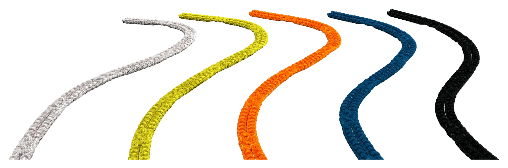
Sets and single ropes for the outdoors, the road, the dog and the laundry. Every product has its own page with what is in the pack, which locks to use and where to buy.

3.5 m No 16 for dragging and lifting, 5 m No 8 for tie-downs, 7 m No 4 for gear, clothes and tent lines.
Read more →
Two tools for the active hunter: 3.5 m No 16 for pulling game and a hunting leash.
Read more →
1.8–2.7 m, adjustable, controlled semi-choke. The handle opens into a body loop for hands-free use.
Read more →
1.8 m, adjustable neck loop, semi-choke, never tangles. No noisy chains or hooks.
Read more →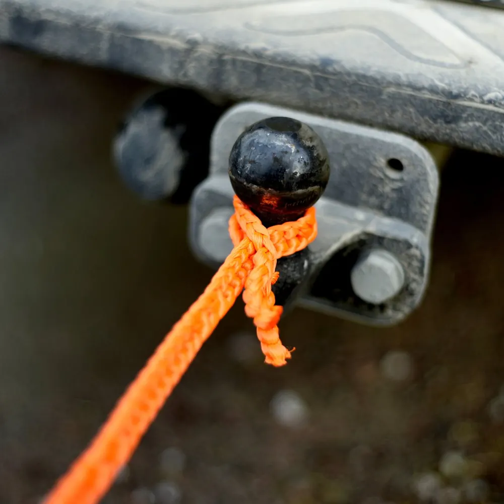
5 m No 20, fluorescent orange. A running loop over the hitch, 25 % stretch against snatching.
Read more →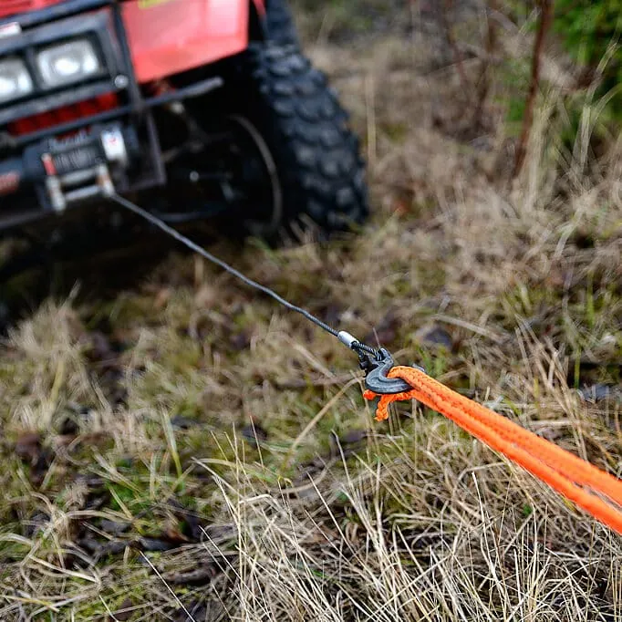
5 m No 20 for the heavy work and 5 m No 8 as the all-round tool.
Read more →
5 m No 20 for towing, easy to lock and unlock with gloves on, 5 m No 8 for the sled.
Read more →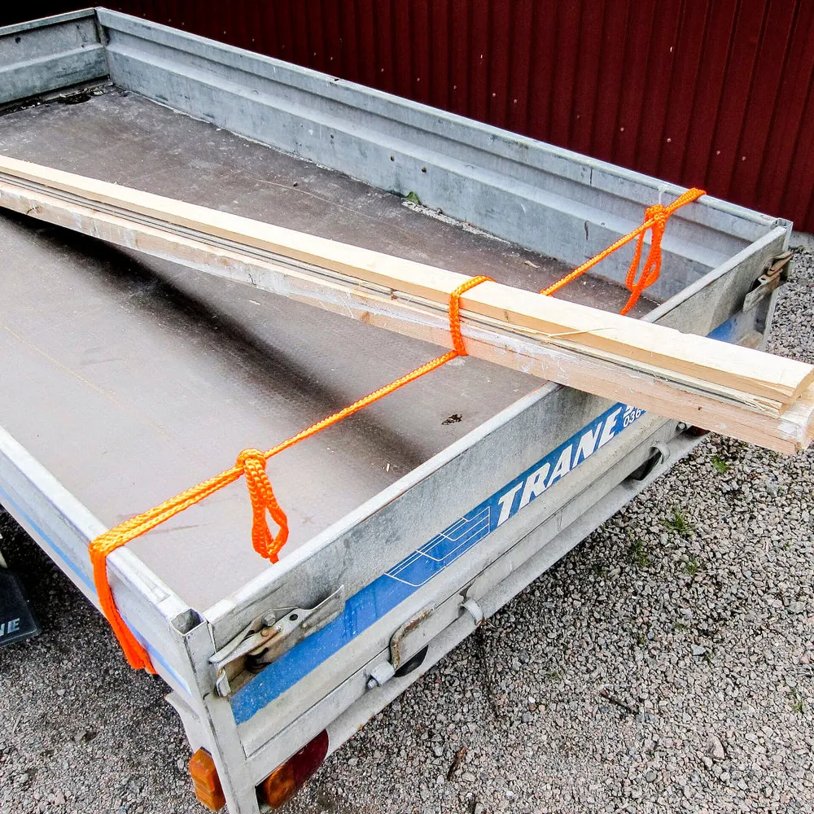
Walk the mower home when the battery runs out far from the station.
Read more →
Every size, five colours. No 4 to No 12 in blister packs, No 16 and No 20 hank-wound.
Read more →
For shops, workshops and high-volume users. Cut to the length you need.
Read more →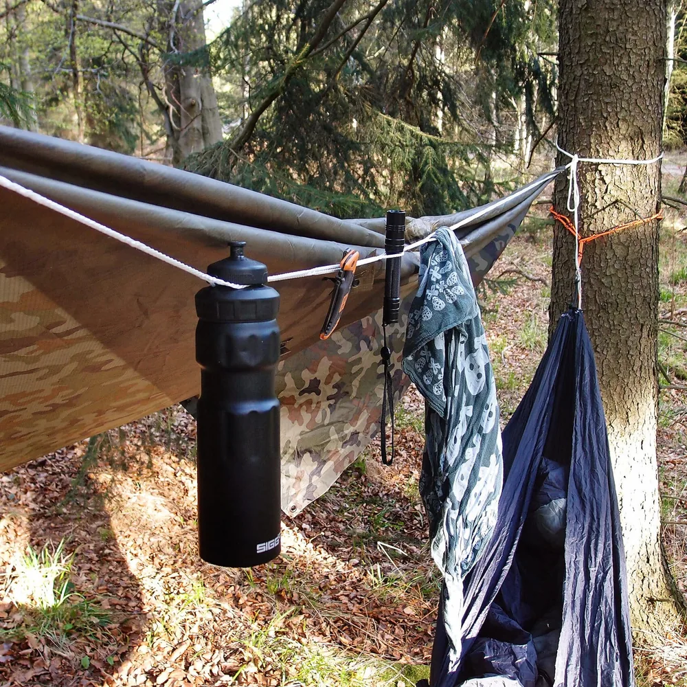
7 m of No 4 with 50 loops. Hangers stay put, laundry stays apart. No pegs, no clips.
Read more →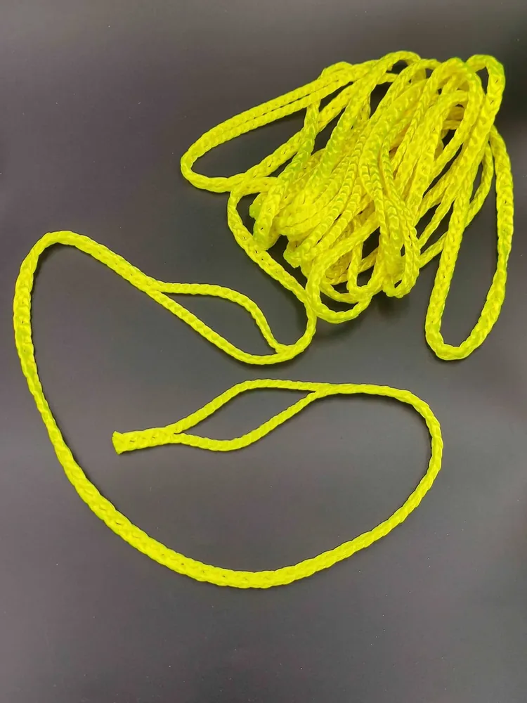
For pre-schools: loops big enough for two small hands, even in mittens.
Read more →Shops and wholesalers: the pre-cut box with 24 ready-cut ropes is ordered directly from us. Companies: for larger orders we make RunLock to your spec, thinner or thicker than the standard sizes, with loops only where you need them, in your length and your colour. Made to your spec →
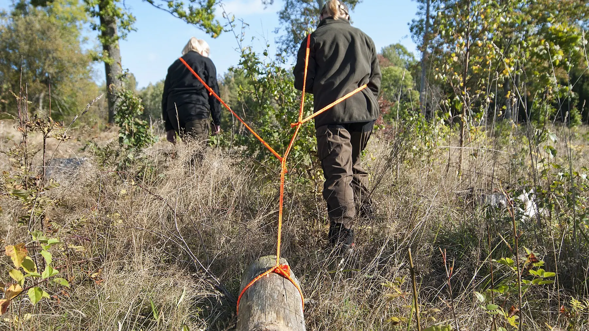
RunLock has been developed and made in Tösse, in the forests of Dalsland, since 1983. It is the same idea as the Texsolv weaving cord that the same factory has made since 1977, taken outdoors: a loop where you need it, a lock without a knot.
Every rope is braided under strict quality control, from 100 % polyester, to work in salt water, in sunlight, in oil and in the cold. The breaking strengths are tested by RISE, and RunLock is used by armed forces, police and professionals as well as by hunters, boat owners and dog people.
Questions about a size, a length, a wholesale order or where to buy? Write to us and we answer from the factory in Tösse, usually the same day.